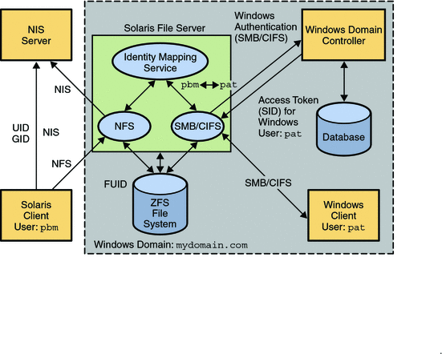

Solaris CIFS Administration Guide
|
|||
|
1. Windows Interoperability (Overview) Configuring the Solaris CIFS Service - Process Overview Utilities and Files Associated With the Solaris CIFS Server and Client Authentication, Directory, Naming, and Time Services 2. Identity Mapping Administration (Tasks) 3. Solaris CIFS Service Administration (Tasks) 4. Solaris CIFS Client Administration (Tasks) |
The Solaris CIFS ServiceThe Solaris Operating System (Solaris OS) has reached a new level of Windows interoperability with the introduction of an integrated CIFS service. A Solaris server can now be an active participant in a Windows active directory domain and provide ubiquitous, cross-protocol file sharing through CIFS and NFS to clients in their native dialect. The Solaris CIFS service allows a native Solaris system to serve files, by means of CIFS shares, to CIFS/SMB enabled clients, such as Windows and Mac OS systems. By virtue of the Solaris CIFS service, a Windows client (or other CIFS client) can interoperate with the Solaris CIFS service as it would with a Windows server. The Solaris CIFS service can operate in either workgroup mode or in domain mode. In workgroup mode, the Solaris CIFS service is responsible for authenticating users locally when access is requested to shared resources. This authentication process is referred to as local login. In domain mode, the Solaris CIFS service uses pass-through authentication, in which user authentication is delegated to a domain controller. When a user is successfully authenticated, the Solaris CIFS service generates an access token using the security identifiers (SIDs) that represent the user's identity and the groups of which the user is a member. When the user requests access to files or resources from the service, the access token is used to determine access to files by cross-checking the token with the access control list (ACL) or permissions on files and resources. Solaris OS credentials have been enhanced to fully support Windows-style SIDs. In addition, file systems, such as ZFS, support Windows-style ACLs and access checking. The Solaris OS is unique in that it can manage user identities simultaneously by using both traditional UIDs (and GIDs) and SIDs. When a user is authenticated through the CIFS service, the user's CIFS identity is mapped to the appropriate UNIX® or Network Information Service (NIS) identity by using the idmap identity mapping service. If an existing UNIX or NIS identity exists, that identity is used. Otherwise, a temporary identity is generated using ephemeral UIDs and GIDs, as required. Ephemeral IDs are valid only within each Solaris OS instance and only until the system is rebooted. These IDs are never stored on disk or transmitted over the network. When an ACL is stored on disk through the CIFS service, the SIDs are used to generate the access control entries. Solaris utilities, such as ls and chmod, support ACL management. For more information about how the Solaris OS manages user identities, see Chapter 2, Identity Mapping Administration (Tasks). The following diagram shows how a Solaris file server can operate simultaneously with both NIS and Windows domains. The Windows domain controller provides CIFS authentication and naming services for CIFS clients and servers, while the NIS servers provide naming services for NFS clients and servers. Figure 1-1 Solaris CIFS EnvironmentThe Solaris services described in this book include the following components: Solaris CIFS ServiceNote - The Samba and CIFS services cannot be used simultaneously on a single Solaris system. The Samba service must be disabled in order to run the Solaris CIFS service. For more information, see How to Disable the Samba Service. For a high-level overview of configuring the Solaris CIFS service, see Configuring the Solaris CIFS Service - Process Overview. For information about configuring the service, see Chapter 3, Solaris CIFS Service Administration (Tasks). For more information about the Solaris CIFS service, see the smbadm(1M), smbd(1M), smbstat(1M), smb(4), smbautohome(4), and pam_smb_passwd(5) man pages. The CIFS features offered by the Solaris service depend on the file system being shared. To fully support the Solaris CIFS service, a file system should support the following features:
For information about the supported features of the UFS and ZFS file systems, see the ufs(7FS) man page and the Solaris ZFS Administration Guide, respectively. For information about how to access CIFS shares from your client, refer to the client documentation. Solaris CIFS ClientThe SMB protocol is the natural file-sharing protocol used by Windows and Mac OS systems. Samba implements the SMB protocol for UNIX and Linux systems. The Solaris CIFS client is a Solaris virtual file system that provides access to files and directories from the CIFS service. By using the Solaris CIFS client, a user can mount remote CIFS shares (directories) on his Solaris system to get read-write access to previously inaccessible files. The Solaris CIFS client does not include the ability to print by means of CIFS or the ability to access CIFS resources other than files and directories. The Solaris CIFS client enables an unprivileged user to mount and unmount shares on directories he owns. For more information about how to use the Solaris CIFS client to access shares, see Chapter 4, Solaris CIFS Client Administration (Tasks), and the smbutil(1), mount_smbfs(1M), nsmbrc(4), and pam_smbfs_login(5) man pages. Identity Mapping ServiceThe Solaris OS includes an identity mapping service that enables you to map identities between Solaris systems and Windows systems. This identity mapping service supports the following types of mappings between Windows security identities (SIDs) and Solaris user IDs and group IDs (UIDs and GIDs):
The idmap utility can be used to create and manage the name-based mappings and to monitor the mappings in effect. For more information about mapping user and group identities, see Mapping User and Group Identities. For information about how to determine your identity mapping strategy, see Creating Your Identity Mapping Strategy. For instructions on how to use the idmap command, see Managing Directory-Based Identity Mapping for Users and Groups (Task Map), Managing Rule-Based Identity Mapping for Users and Groups (Task Map), and the idmap(1M) man page. Managing Solaris CIFS Configuration PropertiesThe Solaris CIFS service and the Solaris CIFS client use the sharectl command to manage configuration properties. For descriptions of the Solaris CIFS service properties, see the sharectl(1M) and smb(4) man pages. For descriptions of the Solaris CIFS client properties, see the nsmbrc(4) man page. The Solaris CIFS properties and their values are stored in the Service Management Facility (SMF). For more information about SMF, see Chapter 15, Managing Services (Overview), in System Administration Guide: Basic Administration. The sharectl command is used throughout the configuration process to set and view properties. This command and examples of its use are described in Chapter 3, Solaris CIFS Service Administration (Tasks). The sharectl command is also used by the Solaris CIFS client to configure the global environment. For more information, see Chapter 4, Solaris CIFS Client Administration (Tasks). |
||
|